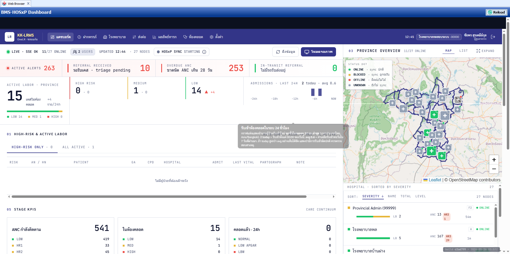
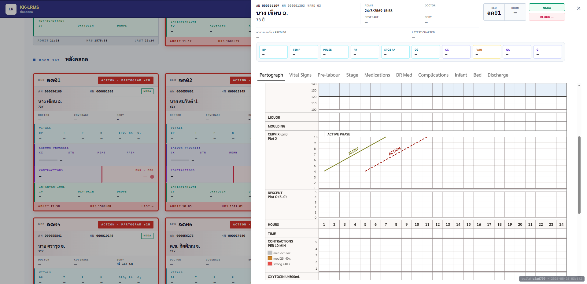

ส่วนที่ 1 · ปัญหา
หญิงตั้งครรภ์หนึ่งคน อาจได้รับบริการจากหลายหน่วยบริการ และในแต่ละจุดเปลี่ยนผ่าน ข้อมูลสำคัญอาจไม่ตามผู้ป่วยไป
ส่วนที่ 2 · แนวคิด
KK-LRMS เป็นระบบดิจิทัลที่สนับสนุนแนวคิด One Province One Labor Room โดยเริ่มต้น POC ที่จังหวัดขอนแก่น และเชื่อมข้อมูลห้องคลอดในเครือข่าย 26 โรงพยาบาล
ส่วนที่ 3 · โมเดล
ส่วนที่ 4 · ผลลัพธ์
ส่วนที่ 5 · รายละเอียดทางเทคนิค
ส่วนที่ 6 · หน้าจอจริง

ส่วนที่ 7 · หน้าจอจริง

กด N เพื่อเปิด/ปิด · มองเห็นเฉพาะหน้าจอ presenter · ระยะเวลาประมาณ 3 นาที/สไลด์
เปิดด้วยภาพแม่และเด็กที่อยู่ใจกลางเครือข่ายโรงพยาบาล 27 แห่ง เน้นว่าวันนี้เรากำลังพูดเรื่องการดูแลที่ เชื่อมโยงกันทั้งจังหวัด ไม่ใช่การดูแลในโรงพยาบาลเดี่ยว ๆ อ่าน Key Message ช้า ๆ "จากการดูแลเป็นจุด ๆ สู่การดูแลต่อเนื่องทั้งจังหวัด"
เล่าผ่าน 4 จุดบริการ — ฝากครรภ์ คลอด ส่งต่อ ติดตามหลังคลอด ชี้ให้เห็นเส้นประสีแดงที่ขาด ๆ ระหว่างจุด — สื่อว่าข้อมูลไม่ตามผู้ป่วยไป เครื่องหมาย "?" บนแต่ละจุดแสดงว่าทีมถัดไปไม่รู้ว่าเกิดอะไรขึ้นในจุดก่อนหน้า ปิดด้วย Key Message "ความปลอดภัยของแม่และเด็ก เริ่มจากข้อมูลที่ต่อเนื่อง"
เปิดด้วยป้าย "One Province · One Labor Room" ชี้ที่แถบทอง — ข้อมูลไหลต่อเนื่องผ่านทั้ง 4 จุด เครื่องหมาย ✓ บอกว่าทุกจุดเห็นภาพเดียวกัน อ่าน 4 แกนระบบ — เน้นว่าแกน 04 "สนับสนุนการตัดสินใจ" คือเป้าหมายปลายทาง ไม่ใช่แค่บันทึก ปิดด้วย "ไม่ใช่แค่ระบบบันทึกข้อมูล แต่คือระบบประสานการดูแลทั้งจังหวัด"
ซ้าย: แนะนำผู้ใช้งานหลัก 5 กลุ่ม — แต่ละกลุ่มมีบทบาทเฉพาะใน journey ขวา: เดินวนตามวงจร 01 → 02 → 03 → 04 → 05 → กลับมาที่ 01 เน้นว่า ขั้นที่ 05 "สรุปภาพรวมระดับจังหวัด" ป้อนกลับเข้าสู่ ANC ของรอบถัดไป (PDCA / continuous improvement ตามข้อมูลจริง)
ซ้าย: คุณค่า 5 ข้อ — เริ่มจากแม่และเด็ก จบที่การพัฒนาคุณภาพระดับจังหวัด ขวา: ตัวชี้วัด 5 ตัว — สิ่งที่ควรวัดเพื่อพิสูจน์คุณค่าเป็นรูปธรรม ปิดด้วย Closing Message "KK-LRMS คือก้าวแรกของระบบดูแลแม่และเด็กแบบเชื่อมโยงทั้งจังหวัด" เปิดให้ผู้ฟังซักถาม
รายละเอียดทางเทคนิคเชิงลึก ใช้เมื่อบอร์ดมีคำถามเทคนิค ขวา: ไดอะแกรม 3 ชั้น — 27 hospitals → KK-LRMS Cloud → users (doctor/nurse/admin) เห็นข้อมูล packets ไหลลงตามลูกศรทอง ซ้าย 4 แกน: (1) Integration — BMS Session API/Webhook + browser-only mode + auto-discharge (2) Clinical Processing — CPD Score 8 ปัจจัย + WHO partograph + alert threshold ≥10 (3) Security — AES-256-GCM + SHA-256 CID hash + RBAC + audit log + DPA (4) Performance — SQL < 2s · SSE < 5s · 200 concurrent · 463 tests · 99.4% sync success Stack ที่ด้านล่าง: Next.js 15 · React 19 · TS 5 strict · Postgres 16 · Redis · NextAuth v5 · SWR · Tailwind 4 · Docker · Vitest ปิดด้วย "ทั้ง stack เปิดเผยได้ ไม่มี black box · ยินดีให้ทีม IT ของกระทรวงตรวจสอบ"
ปิดด้วย หน้าจอจริง ของระบบ — ไม่ใช่ mockup ไม่ใช่ prototype ชี้ที่ navbar บน: "BMS HOSxP Dashboard" และ status indicators ชี้ที่ KPI strip: Provincial alerts, visit pending, active labor (ตัวเลขจริงจาก production) ชี้ที่ แผนที่จังหวัด ด้านขวา: แต่ละจุดคือโรงพยาบาล สี = ระดับความเสี่ยง ชี้ที่ Active labor list: รายชื่อหญิงตั้งครรภ์ที่กำลังคลอด พร้อม CPD score Closing: "ทั้งหมดที่เห็นนี้คือสิ่งที่ทีมแพทย์และผู้บริหารใน 27 โรงพยาบาลใช้งานจริงทุกวัน · ขอบคุณครับ เปิดให้ซักถาม"
หน้าจอ เครื่องมือเฉพาะทาง สำหรับสูติแพทย์และพยาบาลห้องคลอด ซ้าย: Labour Ward view — เห็นทุกเคสในห้องคลอดของ รพ. แต่ละแห่ง พร้อมสถานะ ความเสี่ยง CPD score ขวา: Digital Partograph รายเคส — กราฟ cervix dilation ตามเวลา พร้อม alert + action line ตามมาตรฐาน WHO Tabs: Partograph · Vital Signs · Pre-labour · Stage · Medications · OR Med · Complications · Infant · Bed · Discharge — ครบทุกมิติของการดูแลคลอด Close: "ทั้งหมดที่เห็นเชื่อมโยงข้อมูลโดยตรงจาก HOSxP — ไม่ต้องพิมพ์ซ้ำ ไม่มีข้อผิดพลาดจากมนุษย์ · ขอบคุณครับ เปิดให้ซักถาม"